Vial of water
| Config name | vial_water |
| Item id | 227 |
| Value | 2 gp |
| Weight | 20g |
| Members | No |
| Tradeable | Yes |
| Stackable | No |
| Defined in | scripts/skill_herblore/configs/brewing/vials.obj |
Vial of water
A glass vial containing water.
Used to make
| Skill | Level | XP | Ingredients | Tool | How | Where | Makes |
|---|---|---|---|---|---|---|---|
| Herblore | use on item | members | |||||
| Herblore | use on item | members | |||||
| Herblore | 1 | 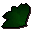 Guam leaf | use on item | members | |||
| Herblore | 5 | use on item | 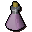 Unfinished potionmembers | ||||
| Herblore | 12 | use on item | members | ||||
| Herblore | 22 | use on item | members | ||||
| Herblore | 30 | 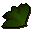 Ranarr weed | use on item | 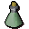 Unfinished potionmembers | |||
| Herblore | 34 | 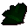 Toadflax | use on item | 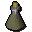 Unfinished potionmembers | |||
| Herblore | 45 | 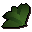 Irit leaf | use on item | members | |||
| Herblore | 50 | use on item | members | ||||
| Herblore | 55 | 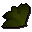 Kwuarm | use on item | members | |||
| Herblore | 63 | 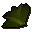 Snapdragon | use on item | 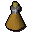 Unfinished potionmembers | |||
| Herblore | 66 | 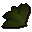 Cadantine | use on item | 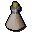 Unfinished potionmembers | |||
| Herblore | 69 | use on item | members | ||||
| Herblore | 72 | 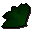 Dwarf weed | use on item | 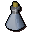 Unfinished potionmembers | |||
| Herblore | 78 | 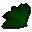 Torstol | use on item | members |
Dropped by
| NPC | Level | Quantity | Rarity | Via | Notes |
|---|---|---|---|---|---|
| 34 | 1 | Always | |||
| 24 | 1 | 25/256 (9.77%) | |||
| 24 | 1 | 25/256 (9.77%) | |||
| 24 | 1 | 25/256 (9.77%) | |||
| 24 | 1 | 25/256 (9.77%) | |||
| 24 | 1 | 25/256 (9.77%) | |||
| 24 | 1 | 25/256 (9.77%) | |||
| 13 | 1 | 5/64 (7.81%) | |||
| 37 | 1 | 1/128 (0.78%) | |||
| 70 | 1 | 1/128 (0.78%) |
Sold at
| Shop | Shopkeeper | Stock |
|---|---|---|
| Jiminua's Jungle Store. | 50 | |
| Obli's General Store. | 50 |
Quests
Referenced in scripts
scripts/_test/scripts/cheats/cheat_bank.rs2scripts/areas/area_canifis/scripts/canafis_citizen.rs2scripts/drop tables/scripts/chaos_druid.rs2scripts/drop tables/scripts/chaos_druid_warrior.rs2scripts/drop tables/scripts/salarin_the_twisted.rs2scripts/quests/quest_itwatchtower/scripts/ogre_potion.rs2scripts/quests/quest_itwatchtower/scripts/watchtower_wizard.rs2scripts/quests/quest_legends/scripts/legends_boulder.rs2scripts/quests/quest_legends/scripts/quest_legends.rs2scripts/skill_herblore/scripts/brewing/brew_potion.rs2scripts/skill_herblore/scripts/grinding/grind_ingredient.rs2